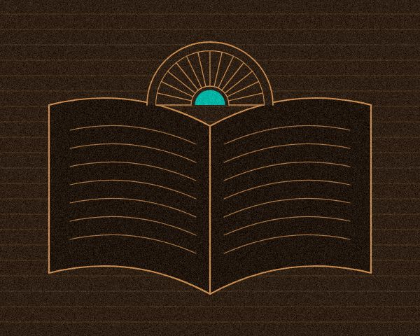
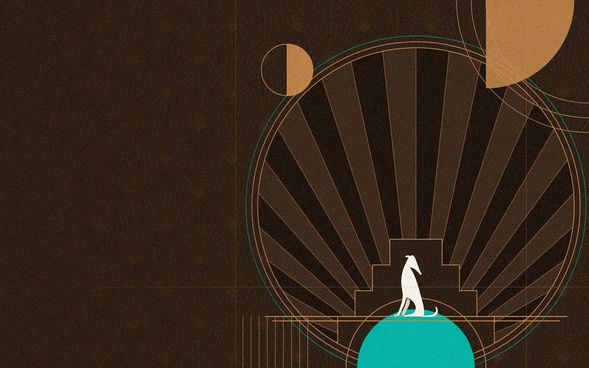
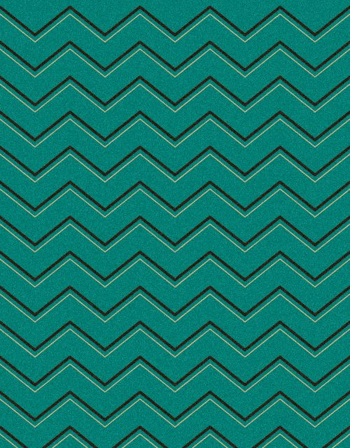
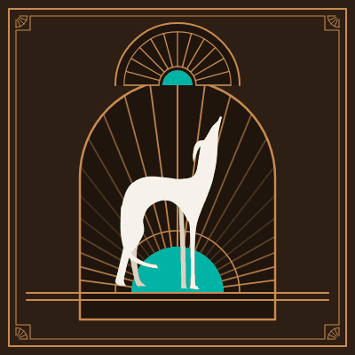
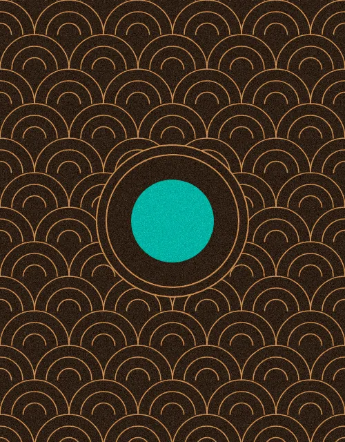

Ein Abend, an dem niemand zu Hause warten muss
Kennst du das? Eine Lesung, die dich interessiert, ein Konzert, auf das du dich freust, aber dein Hund müsste allein bleiben. Bei Pfoten & Poesie ist es genau andersherum: Der Abend ist für euch beide gemacht. Eine Autorin liest, ein Trio spielt leisen Swing, und neben jedem Stuhl liegt eine Decke für deinen Vierbeiner.
Das Programm hat eine große Gassi-Pause im Garten, die Musik bleibt unter 75 Dezibel, und es gibt Wassernapf-Bar, Leckerli-Buffet und eine abgedunkelte Kuschelloge. Applaus gibt es bei uns lautlos: mit erhobenen Händen statt Klatschen.
- , Einlass ab
- Palais Eilbek, Am Eilbekkanal 27, 22089 Hamburg
- Für Hundebesitzer:innen und alle, die Hunde lieben
Noch so lange bis zum Einlass am
- – Tage
- – Stunden
- – Minuten
- – Sekunden
Präsentiert vom
Kulturverein Eilbek



„Zum ersten Mal seit Jahren eine Lesung ohne schlechtes Gewissen. Bruno hat geschnarcht, aber leise.“
„Die Gassi-Pause im Garten war genial. Danach lagen alle Hunde zufrieden auf ihren Decken.“